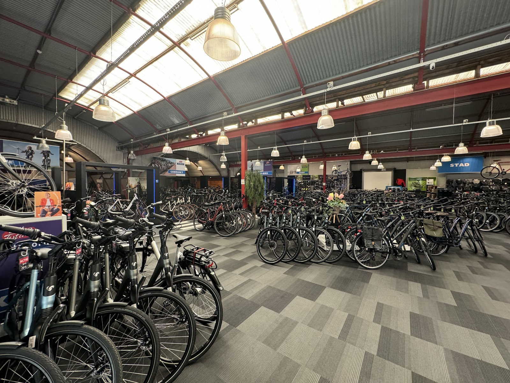
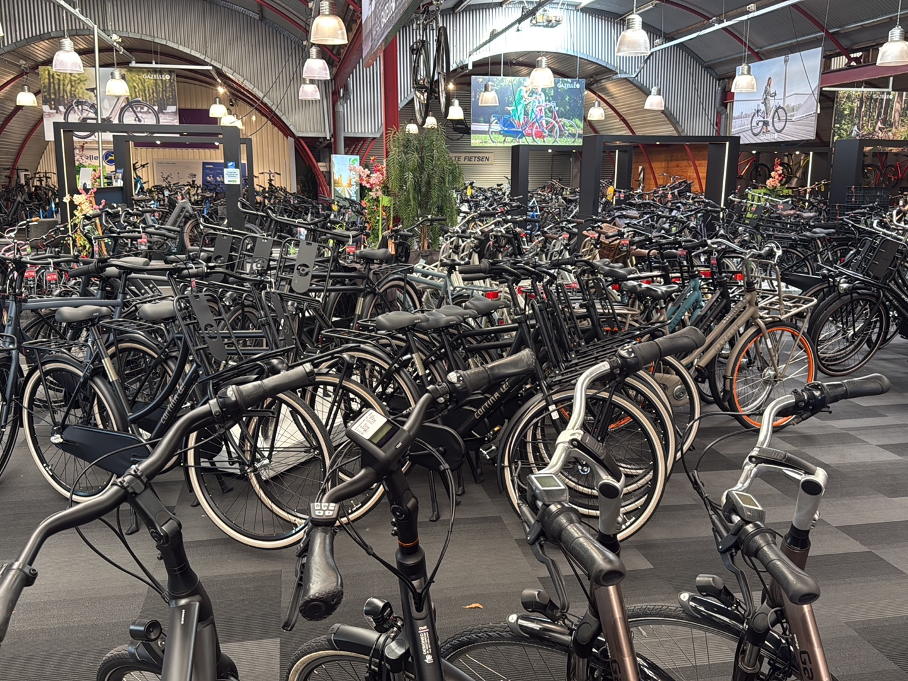
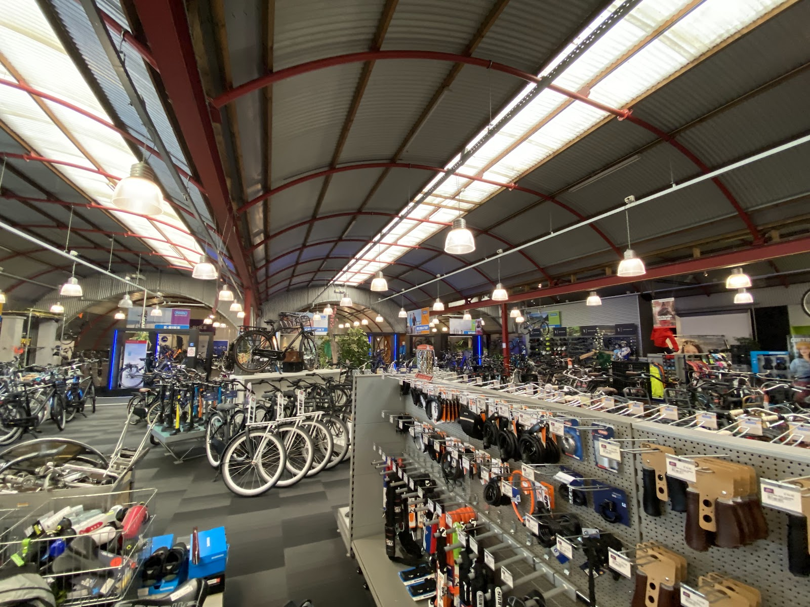
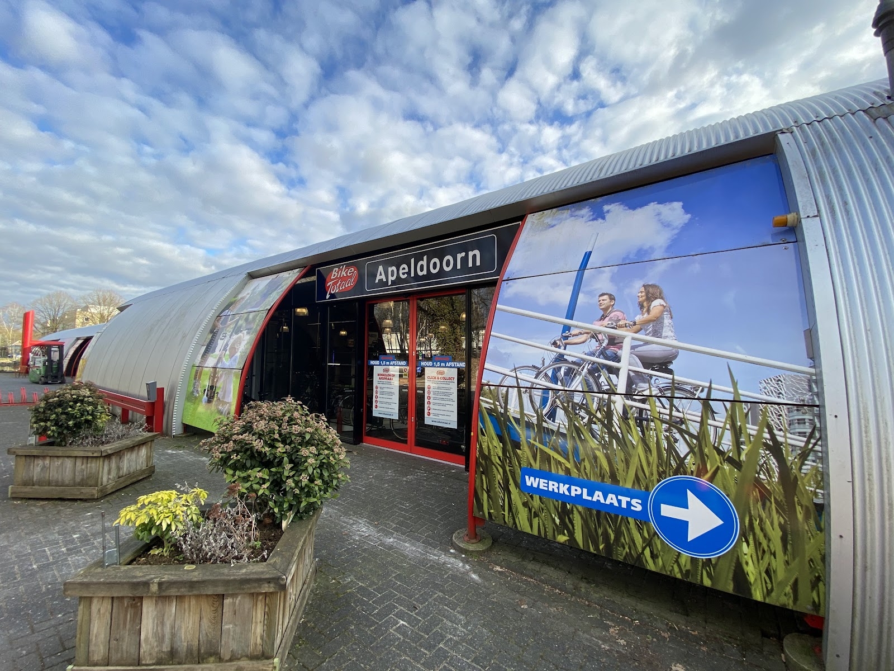
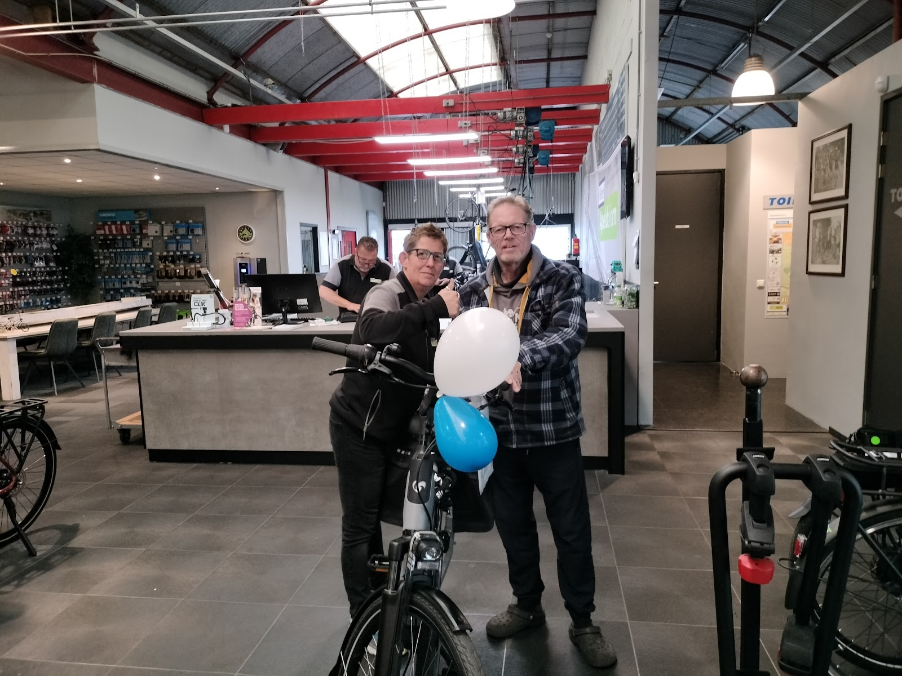
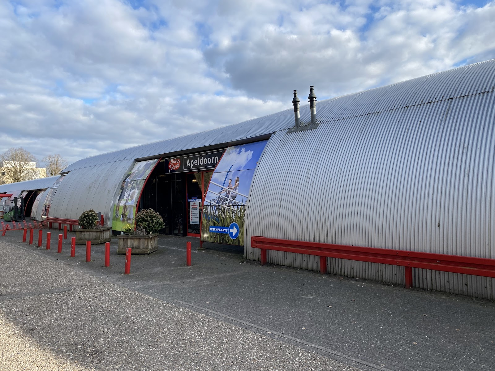

Uw fietsspecialist in Apeldoorn
Een hele hal vol A-merk fietsen en e-bikes, allemaal 100% rijklaar. Uitzoeken, afrekenen en gelijk fietsen. En gaat er iets mis, dan staan onze vakmannen in de werkplaats ernaast klaar.
Laan van Westenenk 86, Apeldoorn
Dinsdag t/m vrijdag 9:00 tot 18:00, zaterdag 9:00 tot 17:00

Maak samen met ons van Apeldoorn een Fietsstad.
Wij verkopen alleen vervoersmiddelen die geen CO2 uitstoten. In de winkel vindt u een groot assortiment A-merk fietsen, accessoires en onderdelen.
Elke fiets staat rijklaar in de winkel. U hoeft niet te wachten tot hij is afgesteld: wat u ziet, neemt u mee.

Wat er in de hal staat
Meer dan 300 fietsen, waarvan ruim 140 e-bikes. Kom ze bekijken en maak gerust een proefrit.
- E-bikes
- Van Batavus Finez en Altura tot Gazelle Grenoble en Qwic. Ook transport e-bikes zoals de Cortina E-U4.
- Stads- en transportfietsen
- Cortina U4 Transport, Batavus, Sparta en Alpina. Voor elke dag naar werk of school.
- Kinderfietsen en bakfietsen
- Alpina, Bikefun en de Carqon bakfiets. Ook voor het monteren van een kinderzitje kunt u bij ons terecht.
- Tweedehands en aanbiedingen
- Ingeruilde fietsen en actiemodellen met flinke korting. Vertel wat u zoekt, wij denken mee.
Onze merken
- Gazelle
- Batavus
- Sparta
- Cortina
- Alpina
- Qwic
- Cube
- Koga

Accessoires en onderdelen
Sloten, verlichting, tassen, handvatten, zadels en onderdelen. Vaak meteen op voorraad, dus u kunt het direct laten monteren.
De werkplaats: echte vakmannen
Voor onderhoud, reparatie en montage volgt u bij de ingang de blauwe pijl. Of het nu gaat om de jaarlijkse beurt, een lekke band of schade onderweg: wij zorgen dat u snel weer rijdt.
- Jaarlijks onderhoud van uw fiets of e-bike
- Reparaties, ook voor wie zijn fiets voor het werk nodig heeft
- Montage van kinderzitjes, sloten en accessoires
- Hulp bij schade onderweg, ook met de bakfiets

Wat klanten over ons zeggen

"Vorigjaar heb ik een ebike gekocht, ik zocht een tweedehandse, vertelde wat voor wensen ik had, de fiets stond nog niet in de winkel was net ingeruild, precies alles wat ik zocht! Dolblij! Ze luisteren naar wat je zoekt en denken goed mee! Mijn advies is om de verzekering ook bij hun af te sluiten."
"Vandaag alweer een fiets gekocht bij Fietsen Apeldoorn, 2 weken geleden geslaagd voor onze dochter en vandaag voor onze zoon. We zijn wederom goed geholpen en geadviseerd door het aardige personeel en komen hier zeker weer terug."
"Al vele jaren klant en wij laten de fietsen netjes jaarlijks onderhouden. Vriendelijke medewerkers. Één fiets is nodig voor postbezorging en bij problemen doen ze altijd alles om hem snel te repareren. Blij mee."
"Hele vriendelijke medewerkers, ik kwam binnen met een kinderstoeltje wat opnieuw gemonteerd moest worden en er werd gelijk tijd voor mij gemaakt!"
"Op onze doortocht met de bakfiets had ik een schade. We zijn fantastisch goed verdergeholpen door de technieker en team! Hartelijk Dankjewel!"
Uw nieuwe fiets in 3 keer betalen
Met in3 betaalt u het volledige bedrag in drie gelijke delen binnen 60 dagen. Zo hoeft u geen grote uitgave in één keer te doen.
Vraag in de winkel naar de voorwaarden.
-
1
Kies en check
Kies in3 bij het afrekenen. Uw gegevens worden direct gecontroleerd.
-
2
Eerste deel
Op de dag van aankoop betaalt u het eerste deel via iDEAL.
-
3
Deel twee en drie
Na 30 en na 60 dagen. U krijgt een mailtje zodra u weer moet betalen.

U vindt ons in de zilveren boogloods
Fietsen ApeldoornLaan van Westenenk 86
7336 AZ Apeldoorn
Openingstijden
| Maandag | Gesloten |
|---|---|
| Dinsdag | 9:00 tot 18:00 |
| Woensdag | 9:00 tot 18:00 |
| Donderdag | 9:00 tot 18:00 |
| Vrijdag | 9:00 tot 18:00 |
| Zaterdag | 9:00 tot 17:00 |
| Zondag | Gesloten |